地政学
ポルトープランスはハイチ国家の中枢で、港、官庁、外交、援助、治安調整が集まる。カリブ海、米州、フランス語圏、移民社会の力学が、首都の道路と港湾を通じて暮らしに届く街である。危機管理も担う場でもある。
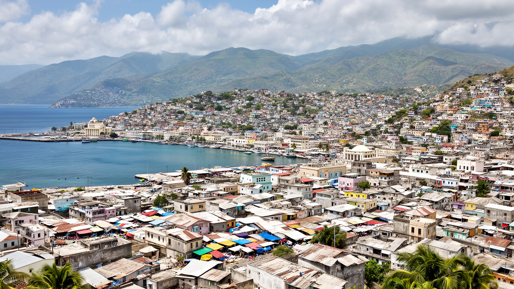
🇭🇹 ハイチ / 西県 / World City Atlas
ゴナーブ湾の奥に広がるハイチの首都。港湾、官庁、市場、丘陵住宅、震災復興、治安危機、ヴードゥーと教会、音楽、移住と送金が重なるカリブ海の都市です。
都市の骨格
ポルトープランスは、港と官庁の低地、商業の市場、丘へ伸びる住宅地、周辺コミューンの密集市街が一体化した首都圏です。復興、治安、物流、信仰、家族の送金が同じ道路と港に重なります。
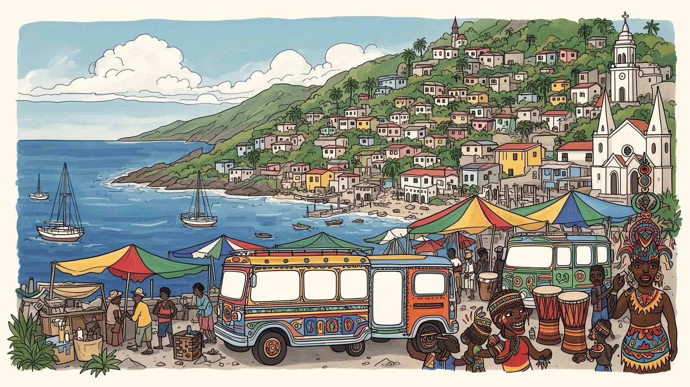
ポルトープランスはハイチ国家の中枢で、港、官庁、外交、援助、治安調整が集まる。カリブ海、米州、フランス語圏、移民社会の力学が、首都の道路と港湾を通じて暮らしに届く街である。危機管理も担う場でもある。
港湾、行政、小売、交通、建設、縫製、援助事業、送金関連サービスが雇用を作る。公式な会社だけでなく、路上商人、運転手、荷役、修理、家内労働が都市経済を動かす重要な基盤である。毎日の糧を作る仕事でもある。
クレオール語、フランス語、カトリック、プロテスタント、ヴードゥー、音楽、絵画、ララのリズムが都市の記憶を作る。信仰は祭礼だけでなく、家族、葬儀、癒やし、相互扶助を支える日常の制度だ。街の声を保つ。
旅行者は鉄市場、シャンドマルス、丘の眺望へ向かうが、住民は治安、物価、断水、停電、交通、学校、医療、避難の不安と向き合う。魅力と危機が近い距離で重なる首都の日常である。生活の強さも映す場でもある。
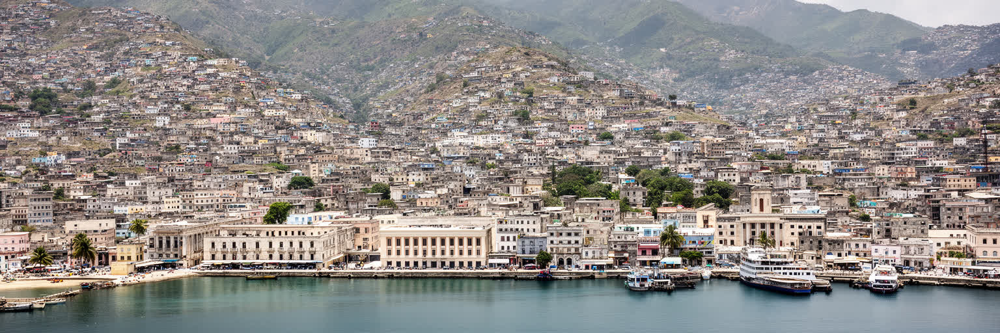
ポルトープランスは、ゴナーブ湾の奥に開いた港から丘へ向かって広がる首都である。低地には港、官庁、商業、金融、バスターミナル、市場が集まり、斜面には住宅地と非公式居住が重なる。ハイチの政治、外交、援助調整、輸入、メディア、大学、医療はこの都市圏へ集中してきたため、首都の不安定さは国全体の生活へすぐ波及する。道路が塞がれば食料と燃料が遅れ、港が止まれば価格が上がり、官庁機能が麻痺すれば地方の行政も滞る。人口規模だけでなく、国家の実務が一つの湾岸都市へ過度に集まっている点が重要である。ポルトープランスを読むには、カリブ海の港町という明るい外観と、中央集権、貧困、災害、治安、移住の圧力を同時に見る必要がある。海、山、港、行政、商人、家族の送金が、都市を支える一本の細い回路を作っている。首都の集中は便利さも生むが、危機が起きた時の代替路を少なくする。地方都市や農村と結ぶ道路、港湾の安全、行政の分散、学校と病院の継続性を整えなければ、都市の混乱は国の停滞へ変わる。湾岸の中心を強くすることと、国家全体の均衡を取り戻すことは、同じ課題である。首都の役割を軽くするには、地方の行政、港、大学、医療を育てる必要もある。それでも政治的象徴と最大市場はここに残り、都市の安定は国民の信頼を測る最初の指標になる。
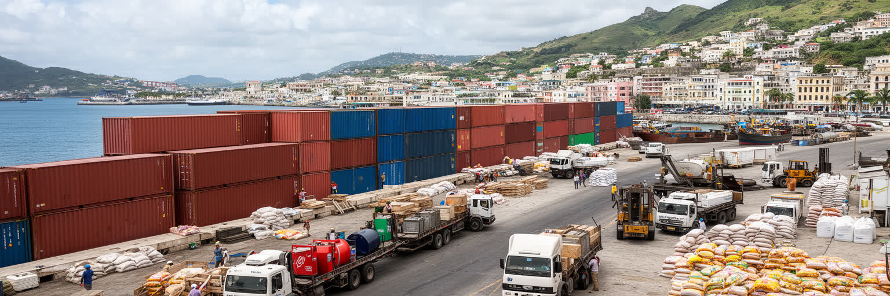
ハイチの首都経済は、ポルトープランス港の動きに強く依存している。米、小麦粉、燃料、医薬品、建材、衣料、車両、援助物資、工業用資材が港を通り、税関、倉庫、トラック、卸売市場、路上販売へ流れる。国内農業は重要だが、都市の食卓と発電、交通、建設は輸入の影響を避けられない。治安悪化で航路や港周辺の動線が乱れると、物価はすぐ上がり、貧しい世帯ほど食費と移動費に圧迫される。港湾労働者、荷役、運転手、倉庫作業員、修理工、通関業者、露店商は、統計に見えにくい都市の物流を担う。港は国家歳入の窓口でもあるため、透明な通関と安全なアクセスは経済政策そのものになる。ポルトープランスの港を眺めることは、海上貿易だけでなく、輸入依存、為替、治安、家計、地方との分断を読むことである。岸壁の混乱は、家庭の台所と病院の棚へ直結する。港の周辺には小さな修理工場、倉庫街、食堂、交通業者、日雇い労働者の待機場所が広がり、荷物が都市の仕事へ変わる過程が見える。港湾を安全に動かすことは、商人の信用を守り、援助物資を住民へ届け、地方から来る農産物の流れも回復させる。物流は無機質なインフラではなく、都市の生活線である。港の信頼が戻れば、商人は在庫を持ち、運転手は危険な迂回を減らし、病院や学校も必要な物資を計画的に確保できる。海への窓は、暮らしの予測可能性を取り戻す場所でもある。
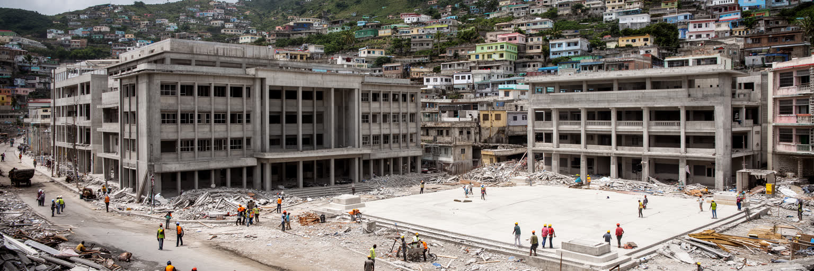
二〇一〇年の大地震は、ポルトープランスの建物、道路、官庁、学校、病院、家族の記憶を深く傷つけた。復興は瓦礫を片づけるだけでは終わらず、土地権利、建築基準、斜面住宅、避難場所、公共施設、雇用、心のケアをめぐる長い課題になった。多くの支援が集まった一方で、援助の調整不足、仮設居住の長期化、資金の透明性、住民参加の不足も批判された。震災後に再建された建物があっても、地盤、排水、耐震、消防、救急アクセスが弱ければ、次の災害への脆弱性は残る。首都の復興は、記念碑的な建築よりも、学校が安全に開き、病院へ行け、家族が住まいを失わず、道路が避難路として機能するかにかかっている。ポルトープランスでは、災害の記憶が日常の建築判断に入り込む。柱の太さ、斜面の排水、屋根の重さ、広場の使い方は、都市がどれだけ過去から学んだかを示す手がかりである。復興を妨げるのは資金不足だけではない。土地の所有関係が曖昧で、許認可が遅れ、治安が悪化すれば、住民は安全な建物を待てずに危険な場所へ戻る。防災は技術基準と同時に、住民が現実に選べる住まい、仕事、交通を増やす政策でなければならない。震災の記憶は世代を越えて残り、学校での避難訓練、地域の集会、建築職人の技能にも反映される。復興を記念日だけに閉じず、毎年の雨季と地震リスクへ備える習慣に変えることが大切である。
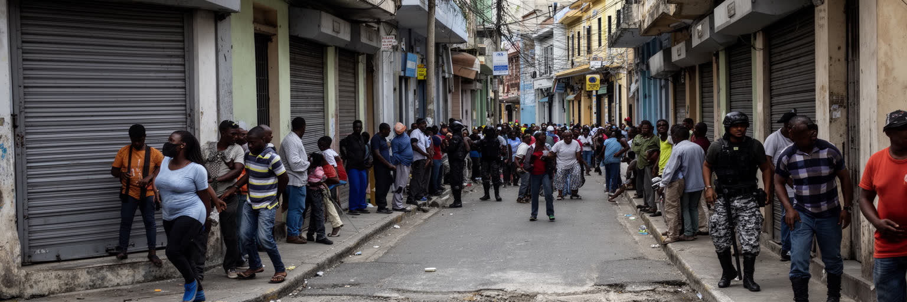
近年のポルトープランスを語る時、武装集団の支配、誘拐、道路封鎖、避難、学校閉鎖、病院へのアクセス、警察力の不足を避けることはできない。治安危機は単なる犯罪問題ではなく、都市の制度を削る力である。市場へ行けない、仕事へ通えない、港から物が出せない、救急車が通れない、子どもが学校へ行けないという状況は、家計と信頼を同時に壊す。国家機関が十分に機能しない地域では、住民は親族、教会、地域組織、商人、非公式な交渉に頼らざるをえない。だがそれは安全な自治ではなく、選択肢を奪われた生活防衛である。国際支援や警備強化だけで都市は直らない。司法、雇用、学校、港湾の透明性、若者の進路、地方経済、政治責任がつながらなければ、暴力は別の形で戻る。ポルトープランスの治安を見ることは、誰が道路を支配し、誰が移動を諦め、誰が都市の公共性を守ろうとしているかを見ることである。恐怖は空間の使い方も変える。商店は早く閉まり、学校は授業日を失い、病院は人員と物資を確保しにくくなる。治安の回復は、警察の配置だけでなく、住民が市場、学校、教会、港へ戻れる日常を再建することを意味する。避難した家族が元の近所へ戻れるか、商人が同じ道を再び使えるかは、統計よりも早く安全の変化を示す。公共性は、道路を誰もが通れるという基本から再び作られる。
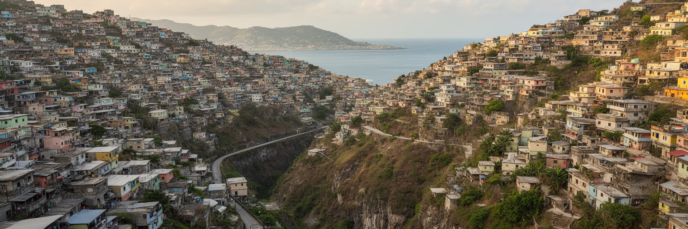
ポルトープランスの都市形態は、低地の港と官庁から、谷筋、斜面、丘の住宅地へ広がる。ペシオンヴィルの商業地や比較的裕福な住宅地、デルマやカルフールの交通軸、シテソレイユの低地、タバールの空港周辺は、それぞれ異なる階層とリスクを抱える。丘に家が増えたのは眺望のためだけではない。中心部の土地不足、地方からの移住、災害後の避難、家賃、親族ネットワークが住まいを押し上げてきた。斜面開発は、雨季の土砂、排水、道路崩壊、消防や救急の困難を伴う。低地では洪水と衛生、港湾周辺では交通と大気汚染が重い。都市圏は行政境界を越えて連続しているのに、サービスと税収、警備、廃棄物処理は分断されやすい。ポルトープランスの地図は、自然地形と社会格差が重なった図である。湾を見下ろす美しい眺望の背後には、水道、道路、学校、土地権利をめぐる不安があり、都市計画はその不均等を直視しなければならない。斜面の小道や階段は住民の生活路であると同時に、雨の日には水の通り道にもなる。舗装、街灯、排水、ゴミ収集、土地台帳を少しずつ整えることが、都市の安全を高める。大規模再開発だけでは、丘の生活の細かな危険を救えない。都市の形は、誰が安全な土地に住めるかを露骨に示す。眺望のよい斜面と崩れやすい斜面は隣り合い、同じ坂道でも世帯の収入で意味が変わる。地形を読むことは、格差を読むことでもある。
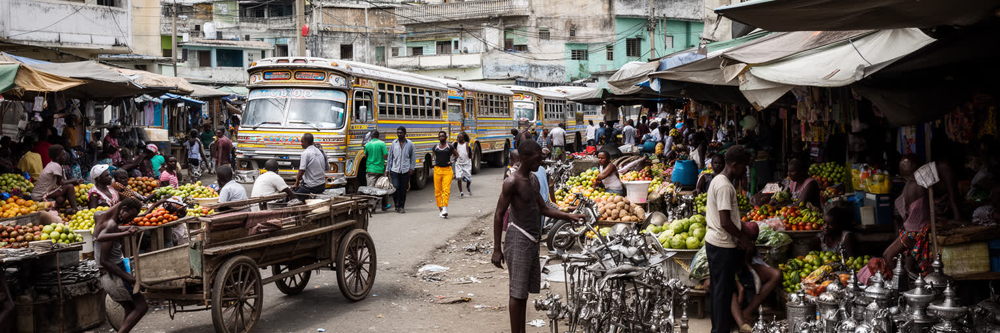
ポルトープランスの市場と路上商業は、都市の生活を最も直接に支える経済である。鉄市場や周辺の商店街、バスターミナル近くの露店、食料の卸売、小さな修理、携帯電話の販売、調理済みの食事、荷物運び、モトタクシー、タップタップの運行は、公式な雇用統計では見えにくい収入を作る。商人の多くは少ない資本で商品を仕入れ、為替、燃料費、治安、通行料、雨、警察との関係に左右されながら日銭を稼ぐ。女性商人は家計と地域の食料供給を支える中心であり、地方の農産物と都市の消費を結びつける。市場は活気ある観光風景である前に、価格交渉、信用、借金、親族、宗教行事、情報交換の場である。道路封鎖や暴力は、商人の移動を止め、商品の腐敗と価格上昇を招く。ポルトープランスの労働を理解するには、ビルのオフィスだけでなく、日陰の露店、荷台、屋台、修理台を見る必要がある。都市の回復力は、こうした小さな仕事の連鎖に支えられている。市場を整える政策は、商人を追い払うことではなく、日陰、水、衛生、保管、交通整理、安全な通路を用意することから始まる。非公式労働を都市の問題としてだけ扱えば、生活を支える技能と信用の網を壊してしまう。働く場所を守ることは、食料供給を守ることでもある。商人の信用台帳や日々の掛け売りは、銀行より身近な金融でもある。小さな商いを守る視点が、首都の貧困対策には欠かせない。
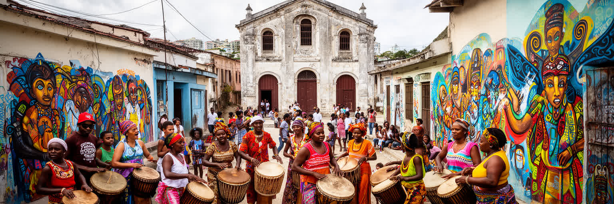
ポルトープランスの文化は、ハイチ革命、アフリカ系の記憶、フランス植民地支配、クレオール語、カトリック、プロテスタント、ヴードゥー、移民経験が重なって生まれる。ヴードゥーは外部からしばしば誤解されるが、精霊、祖先、音楽、癒やし、共同体、葬送を結ぶ信仰であり、都市の家族関係にも深く入り込む。教会は礼拝だけでなく、学校、避難、慈善、政治的な発言の場にもなる。音楽、コンパ、ララ、カーニバル、壁画、金属工芸、絵画は、貧困や暴力の中でも都市が自分を表現する手段である。芸術は観光土産である前に、歴史を語り、痛みを処理し、祝祭を作る社会の技術だ。市場の色、太鼓のリズム、葬列、日曜礼拝、ラジオから流れる音楽は、都市の時間を刻む。ポルトープランスを危機のニュースだけで見ると、この文化の厚みを失う。信仰と芸術は、国家が弱い時にも人々が互いを認識し、記憶を保ち、未来を語るための都市インフラである。若い音楽家や画家、工芸職人は、都市の困難を作品へ変え、海外のハイチ系社会ともつながる。文化施設や祭りが安全に開けることは、娯楽以上の意味を持つ。そこでは住民が同じ都市に属している感覚を取り戻し、失われた公共空間を再び使う練習が行われる。クレオール語で語られる冗談、祈り、歌、政治批判は、都市の記憶を毎日更新する。文化は保存される対象であるだけでなく、危機の中で生き延びる方法でもある。
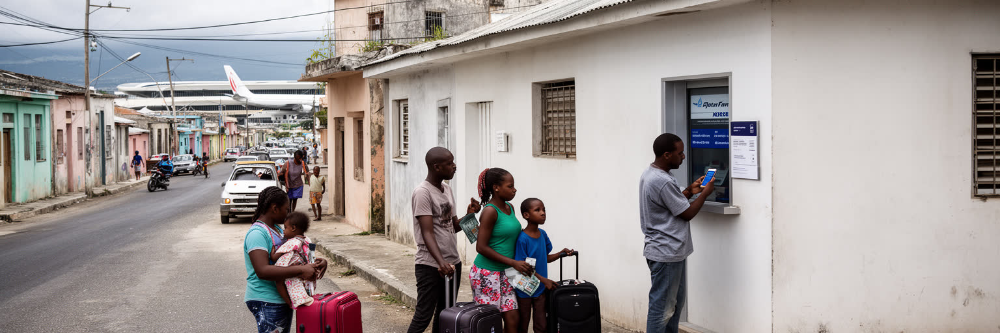
ポルトープランスは、国内移住と海外移住の結節点でもある。地方からは仕事、学校、医療、行政手続き、親族を頼って人が集まり、都市からはドミニカ共和国、米国、カナダ、フランス、チリ、ブラジルなどへ移る人が多い。海外の家族からの送金は、家賃、食費、学費、医療、修理、小商いの資金を支え、国家経済にとっても大きな柱である。送金窓口、携帯決済、旅行代理店、空港への道、パスポート手続きは、都市の日常に移住の現実を刻む。移住は希望である一方、家族の分離、危険な移動、在留資格の不安、送金への依存も生む。国内避難や治安悪化によって住まいを移る人々は、親族宅、教会、学校、仮住まいへ流れ、都市の混雑とサービス不足をさらに深める。ポルトープランスの家計は、街の中だけで完結しない。海外で働く兄弟、地方に残る親、首都で学ぶ子どもが一つの生活単位を作る。都市の経済を読むには、港のコンテナだけでなく、国境を越える家族の送金と感情の回路を見る必要がある。送金は生活を支えるが、物価が上がればすぐ目減りする。海外へ出た人の成功は家族の誇りになる一方、残された介護や子育てを誰が担うかという問題も残る。首都の空港と送金窓口は、希望と不安が同時に行き交う場所である。送金で学費を払う家庭は、教育を移住の次の選択肢として考える。若者に国内で働く道が少ないほど、都市は出発点であり続ける。
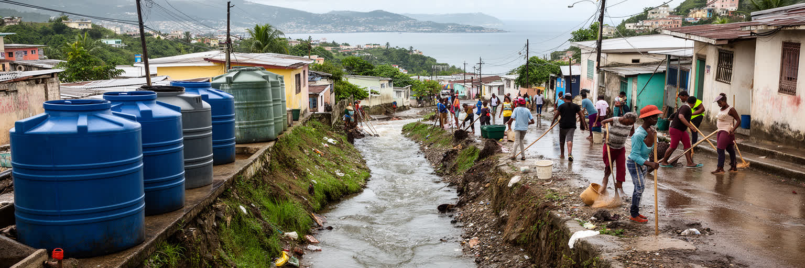
ポルトープランスの生活を左右する基本条件の一つが水である。家庭の給水は不安定で、井戸、給水車、貯水タンク、公共水栓、買った水に頼る世帯も多い。雨季には排水路が詰まり、斜面から土砂とごみが流れ、低地の道路や市場が冠水する。水不足と洪水が同じ都市で起こるのは、インフラ、土地利用、貧困、行政能力、気候変動が重なっているからである。衛生が弱い地域では、汚水、廃棄物、病気、悪臭が日常のリスクになり、子どもや高齢者に重くのしかかる。湾へ流れ込むごみと排水は、港湾環境と海の生態にも影響する。気温上昇や強い雨は、斜面住宅、仮住まい、屋外労働者をさらに脆弱にする。水と衛生は目立つ観光資源ではないが、都市の尊厳を決める最も重要なインフラである。ポルトープランスを安全にするには、警備だけでなく、排水路の清掃、給水の安定、廃棄物収集、斜面の保全を毎日の制度として積み上げる必要がある。水を買う時間と費用は、家計と学習時間を奪う。清潔な水、トイレ、排水、ごみ収集が整えば、病気の予防だけでなく、女性や子どもの負担も軽くなる。都市の気候適応は、海辺の防災と路地の衛生を同じ計画で扱うところから始まる。雨水を流す溝、地域の給水点、廃棄物の集積所は小さく見えるが、日常の安全を支える。気候の課題は未来の抽象論ではなく、今日の水桶と冠水した通学路に現れている。
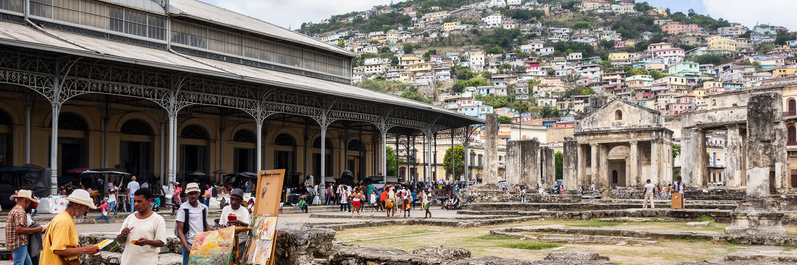
ポルトープランスの観光は、治安状況によって大きく制約されるが、都市にはハイチの歴史と創造力を読む場所が多い。鉄市場、シャンドマルス、国立パンテオン博物館、古い大聖堂跡、周辺の芸術工房、丘の眺望、ペシオンヴィルの商業地は、革命後の国家、震災、信仰、音楽、絵画、日常商業を結ぶ入口になる。だが観光を語る時は、危険を隠してはならない。安全確認、地元ガイド、移動ルート、時間帯、地域社会への配慮が不可欠であり、住民の不安を消費する訪問であってはならない。遺産は建物だけではなく、クレオール語の表現、金属工芸、宗教儀礼、カーニバル、料理、市場の商慣習にも宿る。復興途上の建築や傷んだ広場も、都市の失敗ではなく、歴史の層として読むことができる。観光が再び力を持つには、安全、文化施設、歩行環境、地域の収入、保存活動が同時に整う必要がある。ポルトープランスの遺産は、危機を越えて都市が自分を語り続けるための公共財である。訪問者が少ない時期にも、遺産を守る職人、学芸員、ガイド、修復技術者、音楽家は活動を続けている。観光収入が戻る日を待つだけでなく、学校教育や地域行事の中で歴史を使い続けることが、文化を風化させない力になる。遺産を歩く視線には、被災した建物と生きている市場の両方を含めたい。都市の価値は、完全に整った景観よりも、記憶を手放さない人々の営みに宿る。
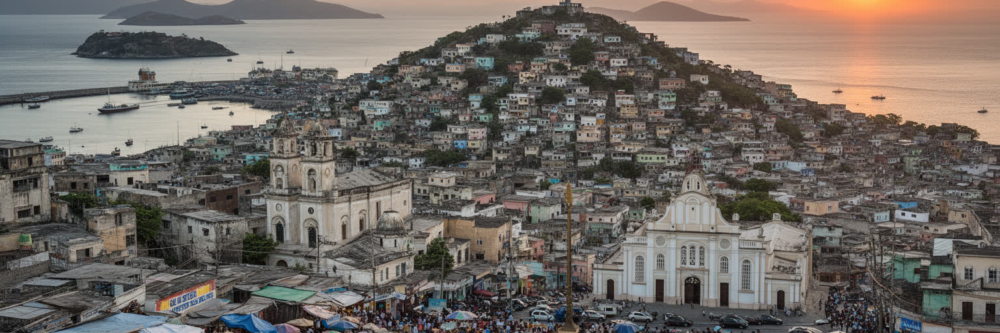
ポルトープランスは、災害、貧困、暴力のニュースで語られやすい都市である。だがそれだけでは、首都がなぜなお人々を集め、国家を動かし、文化を生み続けるのかは分からない。港には輸入と歳入があり、市場には家計と女性商人の知恵があり、丘の住宅には移住と親族の歴史があり、教会とヴードゥーの儀礼には癒やしと共同体がある。震災の記憶は建物の脆さを教え、治安危機は公共性の欠如を露出させるが、同時に住民組織、芸術家、教師、商人、医療者、宗教者が都市を支えようとする姿も見せる。ポルトープランスを読むことは、失敗した首都を裁くことではない。植民地支配、革命、債務、外部介入、中央集権、災害、移民、援助、家族の送金がどのように一つの都市空間を作ったかを理解することである。湾岸の港、シャンドマルス、鉄市場、斜面の家、混雑した道路は、別々の問題ではなく同じ都市の部品である。危機の深さを直視しながら、人々の生活の技術を見落とさないことが、この首都への入口になる。都市の未来は一つの大きな解決策で決まらない。港を開き、学校を守り、水を届け、市場を安全にし、若者が働ける道を増やし、文化を公共空間へ戻す小さな作業が重なる時、首都は少しずつ息を取り戻す。ポルトープランスは、その難しさを最も鋭く見せる都市である。だからこそ、この街を読むことは、カリブ海の一首都を越えて、脆弱な国家と都市生活の関係を考える手がかりになる。